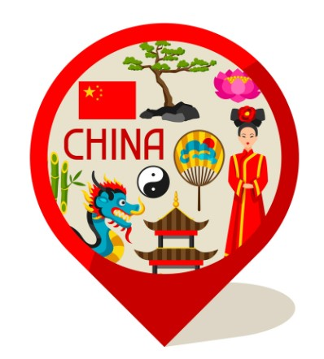
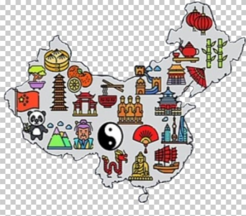
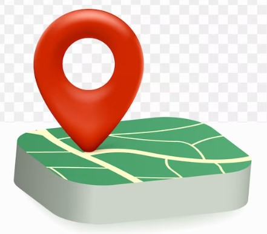

<!DOCTYPE html>
<html lang="en">
<head>
    <meta charset="UTF-8">
    <meta name="viewport" content="width=device-width, initial-scale=1.0">
    <title>Interactive Map</title>
    <!--leaflet css and js-->
    <link rel="stylesheet" href="https://unpkg.com/leaflet@1.9.4/dist/leaflet.css" integrity="sha256-p4NxAoJBhIIN+hmNHrzRCf9tD/miZyoHS5obTRR9BMY=" crossorigin="" />
    <script src="https://unpkg.com/leaflet@1.9.4/dist/leaflet.js" integrity="sha256-20nQCchB9co0qIjJZRGuk2/Z9VM+kNiyxNV1lvTlZBo=" crossorigin="" defer></script>
    <script src="data/point2.js" defer></script>
    <script src="data/polygon2.js" defer></script>
    <style>
        html, body {
            height: 100%;
            margin: 0;
            padding: 0;
        }

        #map {
            height: 100%;
            width: 100%;
        }

        .transparent-icon {
            border-radius: 50%; /* Make it round */
            width: 30px;
            height: 30px;
            display: flex;
            justify-content: center;
            align-items: center;
            background: transparent;
        }

        .transparent-icon img {
            width: 28px;
            height: 28px;
            background: transparent;
        }

        .leaflet-popup-content-wrapper {
            background-color: aqua;
            color:rgb(15, 15, 15);
            font-family: 'Times New Roman', Times, serif;
            border: 1px solid #c0c0c0;
        }
    </style>
</head>
<body>
    <div id="map">
        <div class="leaftlet-control coordinates"></div> 
    </div>
    <script>
        //we should add DOMcontentloaded method to make the map visible
        document.addEventListener('DOMContentLoaded', function () {
            //map initialization
            var map = L.map('map').setView([35.8617, 104.1954], 4);
            
            /*layer and wms*/
            //osm layer
            var osm = L.tileLayer('https://tile.openstreetmap.org/{z}/{x}/{y}.png', {
                attribution: '&copy; <a href="https://www.openstreetmap.org/copyright">OpenStreetMap</a> contributors'
            });  

           // osm.addTo(map);

            //water color -tile layer provider
            var waterColor = L.tileLayer('https://tiles.stadiamaps.com/tiles/alidade_smooth/{z}/{x}/{y}{r}.{ext}', {
                minZoom: 0,
                maxZoom: 20,
                attribution: '&copy; <a href="https://www.stadiamaps.com/" target="_blank">Stadia Maps</a> &copy; <a href="https://openmaptiles.org/" target="_blank">OpenMapTiles</a> &copy; <a href="https://www.openstreetmap.org/copyright">OpenStreetMap</a> contributors',
                ext: 'png'
            });
           // waterColor.addTo(map);

            //green map
            var greenMap = L.tileLayer('https://tiles.stadiamaps.com/tiles/alidade_satellite/{z}/{x}/{y}{r}.{ext}', {
                minZoom: 0,
                maxZoom: 20,
                attribution: '&copy; CNES, Distribution Airbus DS, © Airbus DS, © PlanetObserver (Contains Copernicus Data) | &copy; <a href="https://www.stadiamaps.com/" target="_blank">Stadia Maps</a> &copy; <a href="https://openmaptiles.org/" target="_blank">OpenMapTiles</a> &copy; <a href="https://www.openstreetmap.org/copyright">OpenStreetMap</a> contributors',
                ext: 'jpg'
            });
            greenMap.addTo(map);

            //google street map- google map leaflet
            var googleHybrid = L.tileLayer('http://{s}.google.com/vt?lyrs=s,h&x={x}&y={y}&z={z}',{
                maxZoom: 20,
                subdomains:['mt0','mt1','mt2','mt3']
            });
            //googleHybrid.addTo(map);
            //google satellite map- google map leaflet
            var googleSat = L.tileLayer('http://{s}.google.com/vt?lyrs=s&x={x}&y={y}&z={z}',{
                maxZoom: 20,
                subdomains:['mt0','mt1','mt2','mt3']
            });
            //googleSat.addTo(map);

            var nexrad = L.tileLayer.wms("http://mesonet.agron.iastate.edu/cgi-bin/wms/nexrad/n0r.cgi", {
                layers: 'nexrad-n0r-900913',
                format: 'image/png',
                transparent: true,
                attribution: "Weather data © 2012 IEM Nexrad"
            });

            // add marker and icon
            var markerIcon = L.divIcon({
                className: 'transparent-icon', // Apply the custom CSS class for transparency
                html: '' // HTML content with the image
            });

            var myIcon = L.divIcon({
                className: 'transparent-icon', // Apply the custom CSS class for transparency
                html: '' // HTML content with the image
            });

            var mapIcon = L.divIcon({
                className: 'transparent-icon', // Apply the custom CSS class for transparency
                html: '' // HTML content with the image
            });
            
            //if draggable is false, the marker will not be draggable
            var mainMarker1 = L.marker([35.8617, 104.1954], { icon:markerIcon, draggable: true });  
            var mainMarker2 = L.marker([34.9, 102.3], { icon: myIcon, draggable: true });    
            var mainMarker3 = L.marker([32.8, 106.1], { icon: mapIcon, draggable: true });    

            //define popup content for each marker
            var popupContent1 = `
                <b>China</b><br>
                <a href="index.html"></a><br>
                <b>Population:</b> 1.4 billion<br>
                <b>Party:</b> Chinese Communist Party<br>
                <b>Social Media:</b> ZhiHu<br>
                <b>Project Purpose:</b> This project is to research on the divergences between government politics spectrum and public opinions.
            `;
            var popupContent2 = `
            <b>China</b><br>
            <a href="index.html"></a><br>
            <b>Population:</b> 1.4 billion<br>
            <b>Party:</b> Chinese Communist Party<br>
            <b>Social Media:</b> ZhiHu<br>
            <b>Project Purpose:</b> This project is to research on the divergences between government politics spectrum and public opinions.
        `;
            var popupContent3 = `
            <b>China</b><br>
            <a href="index.html"></a><br>
            <b>Population:</b> 1.4 billion<br>
            <b>Party:</b> Chinese Communist Party<br>
            <b>Social Media:</b> ZhiHu<br>
            <b>Project Purpose:</b> This project is to research on the divergences between government politics spectrum and public opinions.
        `;
              // Bind popup to markers
              mainMarker1.bindPopup(popupContent1).openPopup();
              mainMarker2.bindPopup(popupContent2).openPopup();
              mainMarker3.bindPopup(popupContent3).openPopup();
  
              // Add markers to the map
              mainMarker1.addTo(map);
              mainMarker2.addTo(map);
              mainMarker3.addTo(map);

            //console.log(L.geoJSON(mainMarker.toGeoJSON()));

            //geojson data
            var polygonData = L.geoJson(polygonJson, {
                onEachFeature: function(feature, layer) {
                   layer.bindPopup(`<b>Name: </b>` + feature.properties.name) 
                },
                style: {
                    fillColor: "red",
                    fillOpacity: 1,
                   // stroke: "#c0c0c0"
                    color: "#c0c0c0"
                }

            }).addTo(map);

            var pointData = L.geoJson(pointJson, {
                onEachFeature: function(feature, layer) {
                    // Check if the feature has the desired properties
                    if (feature.properties && feature.properties.name && feature.properties.capital && feature.properties.politics && feature.properties.economics) {
                        // Create the popup content
                        var popupContent ="<b>Name:</b> " + feature.properties.name +"<br><b>Capital:</b> " + feature.properties.capital + "<br><b>Politics:</b> " + feature.properties.politics + "<br><b>Economics:</b> " + feature.properties.economics;
                        // Bind the popup to the layer
                        layer.bindPopup(popupContent);
                    }/*,
                    style : {
                        fillColor: "red",
                        fillOpacity: 1,
                        stroke: "#c0c0c0",
                    }*/
                }
            }).addTo(map);

      

            //layer control
            var baseMaps = {
                "OSM": osm,
                "Water Color": waterColor,
                "Green Map": greenMap,
                "Google Hybrid": googleHybrid,
                "Google Satellite": googleSat,
            };

            var overlayMaps = {
                "Marker 1": mainMarker1,
                "Marker 2": mainMarker2,
                "Marker 3": mainMarker3,
                "Polygon Data": polygonData,
                "Point Data": pointData,
                "Nexrad": nexrad  //geoserver for futher digging
            };

            L.control.layers(baseMaps, overlayMaps).addTo(map);  
            /*=======
            leaflet events
            ===========*/      
            map.on('click', function(e) {
                alert("You clicked the map at " + e.latlng);
            });

             /*=======
            leaflet style customization
            ===========*/ 


        });
        
    </script>
</body>
</html>


